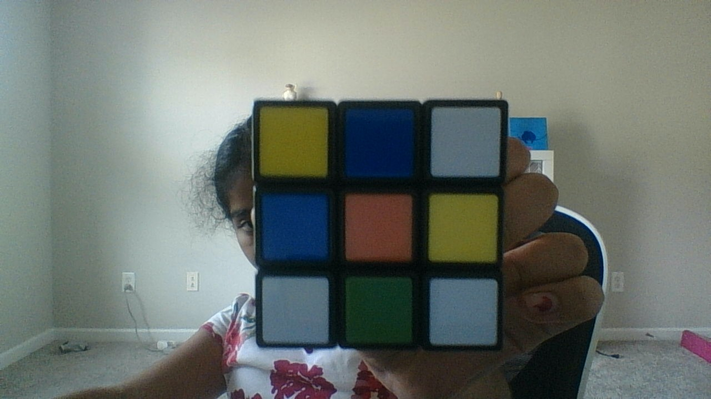
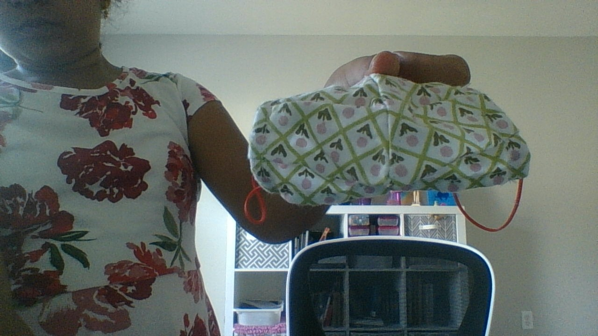
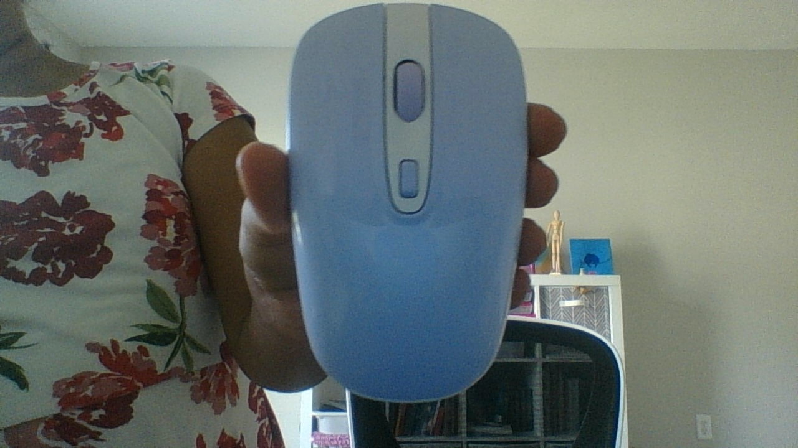

Case Study
By Detective Bellobear
Hello there! Today we are going to figure out the accuracy difference between two image processers: Google Lens and Mobile Net.
.jpg)
Kids Smart Watch
Google Lens: Kids Smart Watch
Mobile Net: Whistle
More Accurate: Google Lens

Rubiks Cube
Google Lens: Rubiks Cube
Mobile Net: Spotlight
More Accurate: Google Lens

Face Mask
Google Lens: Face Mask
Mobile Net: Vacuum Cleaner
More Accurate: Google Lens

Wireless Computer mouse
Google Lens: Wireless Computer Mouse
Mobile Net: Computer Mouse
More Accurate: Google Lens is more accurate, but both are correct
ACCURACY CHECK:
Google Lens: 4/4
Mobile Net: 1/4
Which can we rely on more? - Google Lens
Why does Detective Bellobear think that Google Lens is more accurate than Mobile Net?
Hello everyone! It's me, Detective Bellobear! Above are some examples of objects that have been identified by Mobile Net and Google Lens. As you can see, Google Lens has identified each object correctly, as Mobile Net didn't. That is not the only reason why. Mobile Net is programmed with 1.3 billion images, but Google Lens has the whole internet to search images. This means that it can go through websites such as Amazon. Therefore, we can rely on Google Lens more!